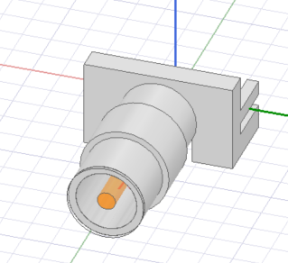

Download this example
Download this example as a Jupyter Notebook or as a Python script.
Convert encrypted 3D components#
The 2023R1 release of Ansys Electronics Desktop (AEDT) implemented a new solid modeling kernel.
This example demonstrates how to easily migrate encrypted 3D components from older versions of AEDT that relied on the ACIS modeling kernel, to the new versions of AEDT that employ the Parasolid kernel. Specifically, if your encrypted 3D components were created with version 22R2 or earlier, you’ll need to convert them to a version ≥ 23R1 that supports the Parasolid modeler.
Keywords: HFSS, Encrypted, 3D component, Modeler kernel.

Prerequisites#
Perform imports#
[ ]:
import os
import tempfile
import time
from ansys.aedt.core import Desktop, Hfss, settings
from ansys.aedt.core.examples.downloads import download_file
Define constants#
Constants help ensure consistency and avoid repetition throughout the example.
[ ]:
AEDT_VERSION = "2025.2"
OLD_AEDT_VERSION = "2024.1"
NG_MODE = False # Open AEDT UI when AEDT is launched.
Create temporary directory#
Create a temporary working directory. The name of the working folder is stored in temp_folder.name.
Note: The final cell in the notebook cleans up the temporary folder. If you want to retrieve the AEDT project and data, do so before executing the final cell in the notebook.
[ ]:
temp_folder = tempfile.TemporaryDirectory(suffix=".ansys")
Covert the encrypted component#
Retrieve the component that will be converted#
The download_file() method provides access to a library of examples and models from the Ansys GitHub organization: example-data repository. Download the “old” encrypted 3D component and define a name to use for the new, coverted component.
[ ]:
a3dcomp = download_file(
source="component_3d",
name="SMA_Edge_Connector_23r2_encrypted_password_ansys.a3dcomp",
local_path=temp_folder.name,
)
# Name of the converted 3D component:
new_component_filename = os.path.join(temp_folder.name, r"SMA_Edge_Connector_encrypted.a3dcomp")
Enable multiple desktop instances.#
This example runs two versions of AEDT simultaneously.
Note: Both the old and new versions of AEDT must be installed on the machine where this example runs.
[ ]:
settings.use_multi_desktop = True
Load the encrypted 3D component.#
Launch the old version of AEDT and load the encrypted component. Pass the keyword argument aedt_process_id to ensure that the Hfss instance connects to the correct running version of HFSS. The encryption password must be provided to enable conversion.
[ ]:
aedt_old = Desktop(new_desktop=True, version=OLD_AEDT_VERSION)
# Insert an empty HFSS design.
hfss1 = Hfss(aedt_process_id=aedt_old.aedt_process_id, solution_type="Terminal")
# Insert the encrypted 3D component.
cmp = hfss1.modeler.insert_3d_component(input_file=a3dcomp, password="ansys")
# Open the 3D component definition.
app_comp = cmp.edit_definition(password="ansys")
Convert the encrypted 3D component#
Launch another instance of AEDT to enable conversion of the 3D component.
After the new version of AEDT is started, the process ID is retrieved via the property aedt.aedt_process_id and is passed as an argument to Hfss(). This ensures that the newly created hfss2 object is connected to the correct version and instance of AEDT.
[ ]:
aedt = Desktop(new_desktop=True, version=AEDT_VERSION)
# Insert an empty HFSS design.
hfss2 = Hfss(aedt_process_id=aedt.aedt_process_id, solution_type="Terminal")
# Copy objects from the old design.
hfss2.copy_solid_bodies_from(design=app_comp, no_vacuum=False, no_pec=False)
# Create the new encrypted 3D component.
hfss2.modeler.create_3dcomponent(
input_file=new_component_filename,
is_encrypted=True,
edit_password="ansys",
hide_contents=False,
allow_edit=True,
password_type="InternalPassword",
)
Finish#
Save the projects#
[ ]:
aedt.save_project()
aedt_old.save_project()
aedt.release_desktop()
aedt_old.release_desktop()
print(f"The new encrypted 3D component can be retrieved from: {new_component_filename}")
# Wait 3 seconds to allow AEDT to shut down before cleaning the temporary directory.
time.sleep(3)
Clean up#
All project files are saved in the folder temp_folder.name. If you’ve run this example as a Jupyter notebook, you can retrieve those project files. The following cell removes all temporary files, including the project folder.
[ ]:
temp_folder.cleanup()
Download this example
Download this example as a Jupyter Notebook or as a Python script.